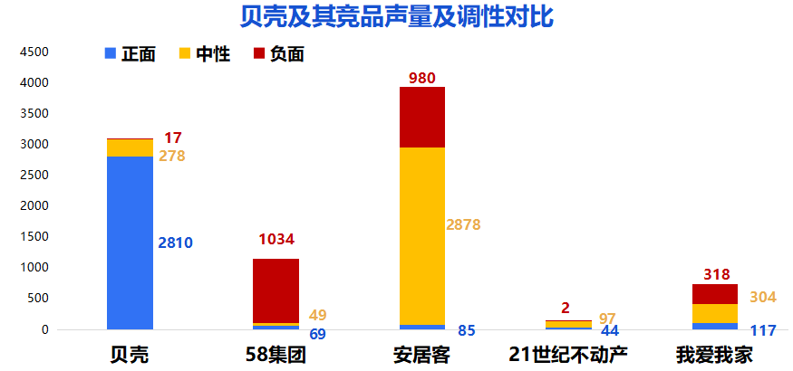

舆情概览
1.贝壳研究院首席分析师许小乐对北京公积金新政策解读的报道和引用研究院数据（转载量：1012篇）
2.贝壳99找房节，省一点更幸福微博话题活动（转载量：743篇）
3.贝壳估价请求突破1.4亿次落地48城（转载量：534篇）
4.活力滨城,2018贝壳中国・社区跑大连站开跑（转载数量：26篇）
5.58同城安居客等网站再被北京住建委点名
6.我爱我家野蛮扩张陷舆论危机,高管离职潮暗藏风险

贝壳舆情
正面舆情
1.贝壳研究院首席分析师许小乐对北京公积金新政策解读的报道和引用研究院数据
（转载量：1012篇）
1）北青网：北京公积金“认房又认贷” 专家：对刚需影响大
2、“贝壳99找房节，省一点更幸福”活动引发网友讨论关注转载。
（14日转载数量：1586篇，今日转载数量：743篇）
1) 长沙晚报网：贝壳新房推99找房节活动送福利优惠
3、贝壳估价请求突破1.4亿次，落地全国48城打造行业基础设施。
（转载数量：534篇）
1) 中华网：贝壳估价请求突破1.4亿次，落地全国48城打造行业基础设施
4、一个行业的20年:30万亿累计交易从野蛮生长到合作共生。
（14日转载数量：13篇，今日转载33篇）
1) 凤凰网：一个行业的20年：30万亿累计交易 从野蛮生长到合作共生
5、活力滨城，2018贝壳中国・社区跑大连站开跑。
（转载数量：26篇）
1) 搜狐网：活力滨城，2018贝壳中国・社区跑大连站开跑
6、贝壳租房案例入选北京市信用大数据试点项目。
（转载数量：20篇）
1）千龙网：贝壳租房案例入选北京市信用大数据试点项目
正面舆情
1、链家半月内密集转移17家旗下子公司疑为上市做准备提及贝壳。
（14日转载数量：55篇，今日转载数量：128篇）
1)国际金融报：左晖施展腾挪术，17家子公司低调转移，为链家上市铺路？
2、贝壳在香港新成立三家公司 上市步伐或加快。
（14日转载数量：50篇，今日转载数量：33篇）
1）中金在线：链家贝壳在香港成立三家公司疑为上市做准备
3、58相关报道提及贝壳。
（转载数量：27篇）（14日转载数量：13篇，今日转载33篇）
1) 1）新浪财经：重手整治虚假房源，58同城的悲伤逆流成河！商业模式之殇
4、长租公寓相关媒体报道简单引用贝壳研究院数据。
（转载数量：12篇）
1）微信公众号-爱利是：是是非非，长租公寓今后如何发展？
负面舆情
1、租客网故意抹黑贝壳。
（转载数量：17篇）
1)北方教育网：租客网：分手吧！你总是用假照片骗我发布负面信息的博客及自媒体号已进行投诉处理
竞品舆情
正面
1、58集团临感VR看房，助推郑州房产经纪行业升维。
（转载数量：18篇）
1)消费日报网：58集团临感VR看房，助推郑州房产经纪行业升维
2、 聚智创局赋能未来-58集团武汉区域战略合作发布会圆满召开。
（转载数量：8篇）
1）凤凰网：聚智创局赋能未来-58集团武汉区域战略合作发布会圆满召开
3、合众地产、新发集团、家港地产携手58同城、安居客、赶集网共同发起 “远足春城，誓师联盟, 鉴证真房源，我们在行动 ”大型户外徒步活动。
（转载数量：5篇）
1）凤凰网：“远足春城,誓师联盟”合众地产、新发集团、家港地产携手58集团践行真房源
1、安居客及京东大搜家等媒体为“中产阶级如何保护自己的财富”财富沙龙的成功举办提供了支持。
（转载数量：16篇）
1) 今日财经：“中产阶级如何保卫自己的财富”沙龙圆满落幕，大咖指路投资选择
2、安居客成为了2018《中国好声音》特别支持品牌。
（转载数量：15篇）
1）凤凰网：安居客牵手《中国好声音》共创品质综艺营销
1、我爱我家董事长谢勇参加由清华大学五道口金融学院和泰合资本联袂举办的“崇岭计划”。
（转载数量：41篇）
1)金融界：互联网新经济领袖齐聚五道口 “崇岭计划” 正式开启
2、我爱我家打造企业核心文化：爱、家、赢。
（转载数量：22篇）
1)天津都市网：我爱我家打造企业核心文化：爱、家、赢
中性
1、引用58安居客房产研究院首席分析师张波对北京公积金政策调整及房地产行业的点评相关报道。
（转载数量：2301篇）
1)新浪网：“金九银十”势头难再房地产全链开启“促销模式”
2)华尔街见闻：公积金可望不可即之后,北京楼市何往
2、行业相关报道简单提及安居客。
（转载数量：487篇）
1)北青网：楼市成限竞房主场改善盘为稀缺品
1、行业相关报道简单提及我爱我家。
（转载数量：283）
1)中国网：8月中国70城房价仅1城下跌专家:调控或加码
负面
1、58同城安居客等网站再被北京住建委点名。
（转载数量：965篇）
1)法制网：58同城安居客等网站再被北京住建委点名
1、58同城的假房源“顽疾”,多次被监管部门点名。
（转载数量：67篇）
1）凤凰网：58同城的假房源“顽疾”,多次被监管部门点名
2）华尔街见闻：迷失端口模式:58同城的假房源之谜
3）搜狐号-楼市资本：重手整治虚假房源，58同城的悲伤逆流成河！商业模式之殇
1、我爱我家深陷租赁乱局房东：对其收房价格感到诧异。
（转载数量：221篇）
1)华夏快报网：我爱我家深陷租赁乱局房东：对其收房价格感到诧异
2、我爱我家野蛮扩张陷舆论危机高管离职潮暗藏风险。
（转载数量：53篇）
1)凤凰网：我爱我家野蛮扩张陷舆论危机,高管离职潮暗藏风险
今日热点
房产
北京商报：8月房价总体微涨 调控难松绑
摘要：国家统计局9月16日发布8月70个大中城市商品住宅销售价格变动情况。从数据看，8月70个城市新建商品住宅价格指数环比增幅为1.5%，同比增幅为8%。数据显示，8月，67个城市房价环比上涨，北京、南京新房价格环比持平，仅厦门1个城市下跌，跌0.1%。二手房方面，厦门、上海环比微跌，北京、锦州持平，其他城市全部上涨。
北京青年报：楼市调控不放松 热门城市渐冷静
摘要：一二三线城市稳中有涨，但在二三线城市中，前期涨幅较大的几个热门城市楼市都“冷静”下来了,海南的三亚和海口两城涨幅回落，但调控政策方面并没有放松的痕迹。楼市调控不放松，一线城市之首的北京在整顿租房市场之后，又迎来严格的公积金新政，从17日起实行“认房又认贷”，缴存年限不足的群体不能获得“顶格”的公积金贷款额度。
民生
北京商报：新周期临近 肉价有望稳中趋降
摘要：8月以来，受高温、台风等季节性因素影响，北京市场猪肉价格出现波动，新一轮“猪周期”或将提前到来。不过，多位业内人士向北京商报记者表示，随着季节性因素影响的消退，同时非洲猪瘟疫情得到有效控制， 9-10月全国生猪供给将明显增多，猪肉价格或将出现回落，未来猪肉价格总体趋势将呈现稳中有降的态势。
中新经纬：17日国内油价或年内第11次上调 加满一箱油将多花5.5元
摘要：今日(17日)24时，9月第二次成品油调价窗口将开启。多家机构认为，受国际油价震荡上涨影响，本次国内成品油价格上调已是板上钉钉。据统计，今年以来，国内成品油价共经历18次调价，呈现“10涨7跌1搁浅”格局。汽油累计上调880元/吨，柴油累计上850元/吨。本次或成为年内第11次上调，若调价政策落实，年内汽柴油累计涨幅有望破千元大关。
互联网
凤凰网：上市在即 美团点评陷入超级应用大战
摘要：据路透社北京时间9月17日报道，美团点评将于本周正式登陆港交所，融资42亿美元。它是中国超级应用之一，有3.4亿用户通过它订购食品杂货、支付账单、租用单车、预订酒店。不过，它还面临其他超级应用的竞争。
砍柴网：地产行业新风向 爱接力慷宝、腾讯、中城联盟达成战略合作
摘要：据了解，腾讯于9月14日在深圳·腾讯滨海大厦举办“腾讯云智慧地产解决方案发”发布会，其中腾讯携手爱接力，与中城联盟三方签署重要战略合作协议，在未来，三方将进行深度合作，结合最新AI技术，共同推动中国传统地产行业新变革。
政策
人民日报：北京明确2020年空气质量改善目标
摘要：《北京市打赢蓝天保卫战三年行动计划》日前正式发布实施。计划明确，到2020年，北京市环境空气质量改善目标在“十三五”规划目标基础上进一步提高，氮氧化物、挥发性有机物比2015年减排30%以上；重污染天数比率比2015年下降25%以上。
证券日报：8月份发行4287.5亿元 地方专项债新政酝酿推出
摘要：财政部日前发布数据显示，8月份共发行专项债券4287.5亿元，环比增加3197亿元，同比增加2935.7亿元。财政部有关负责人表示，为减少专项债券发行对债券市场的影响，财政部加强与监管部门的沟通协调，有力保障了债券市场的平稳运行。同时，财政部正抓紧制定专项债券信息披露要求等多项措施，保障债券发行工作顺利开展。